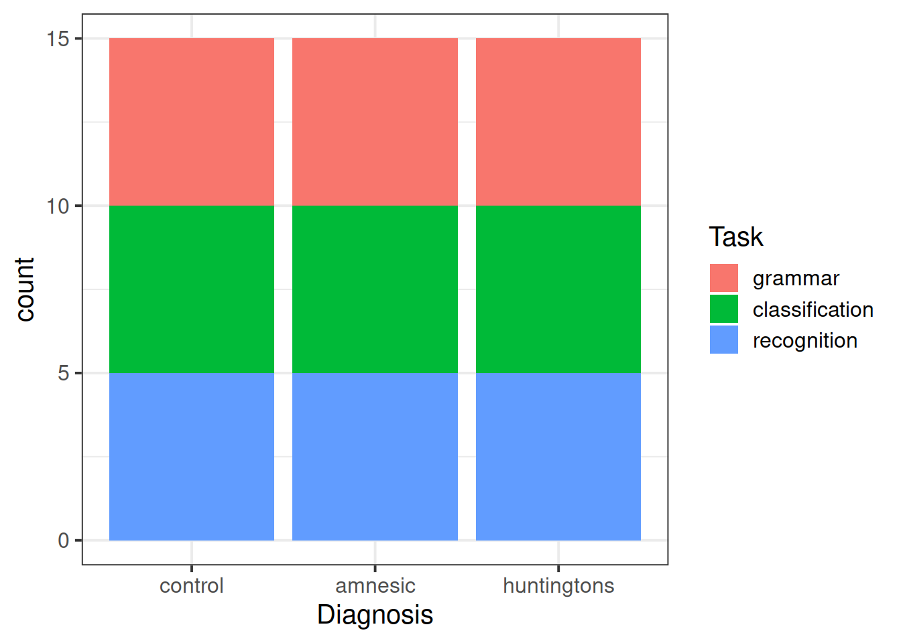
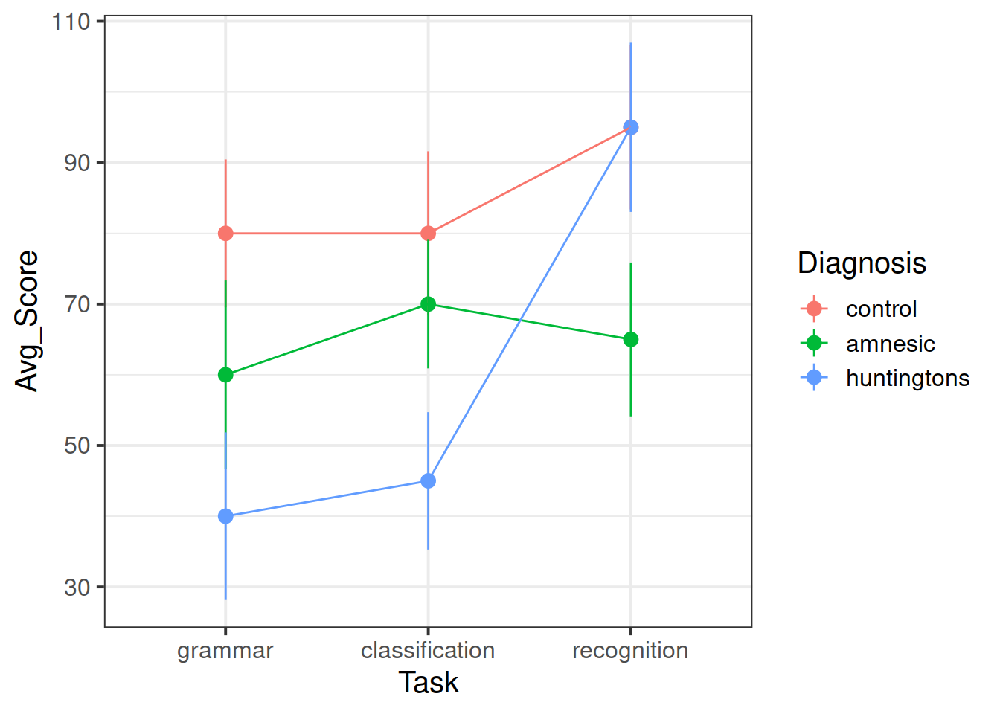
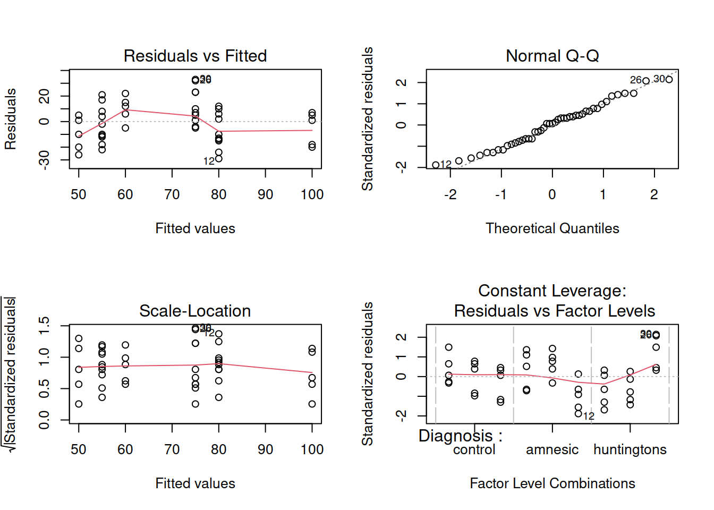
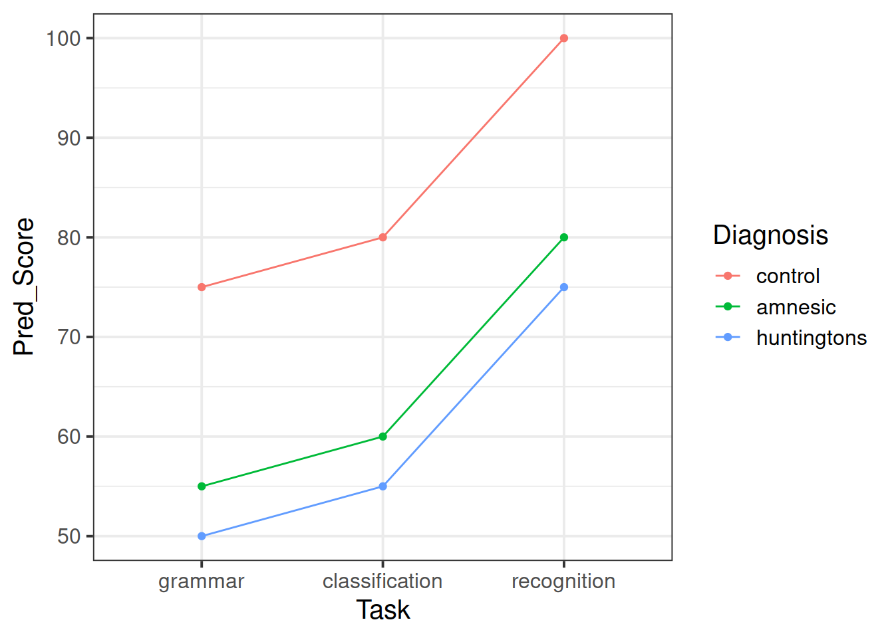
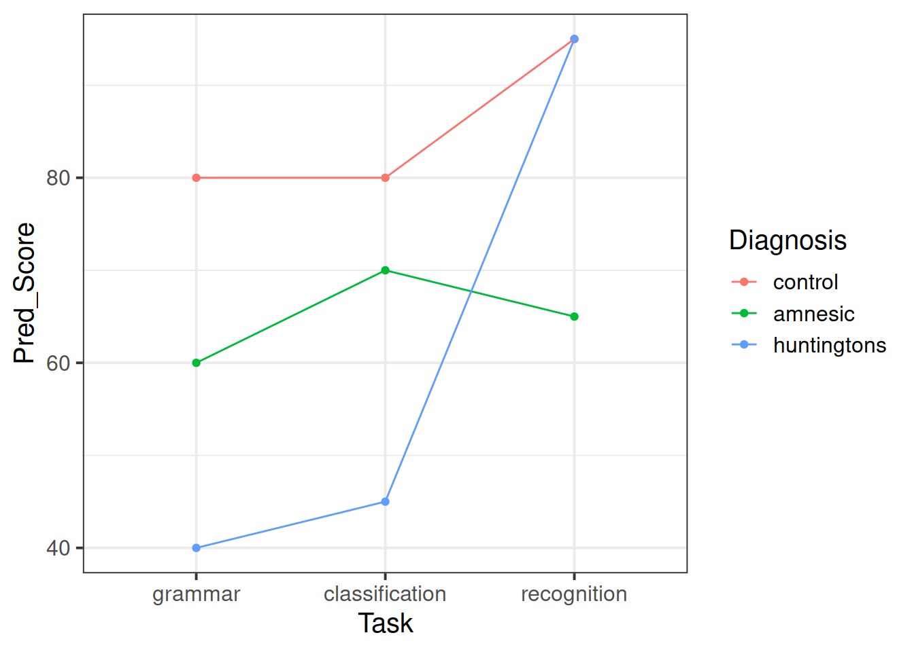
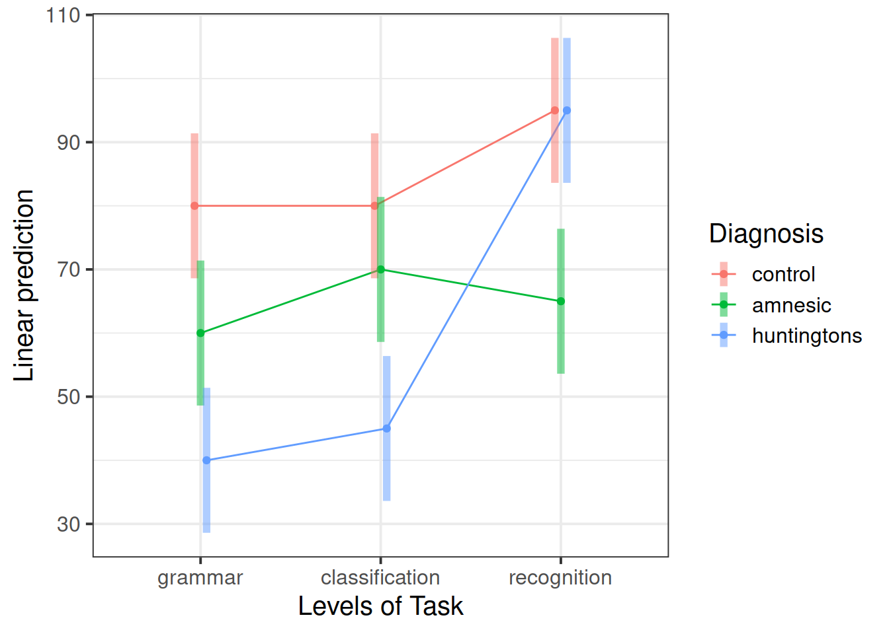
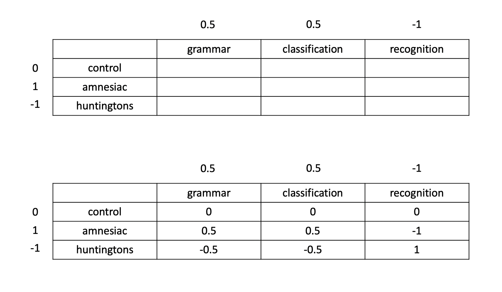
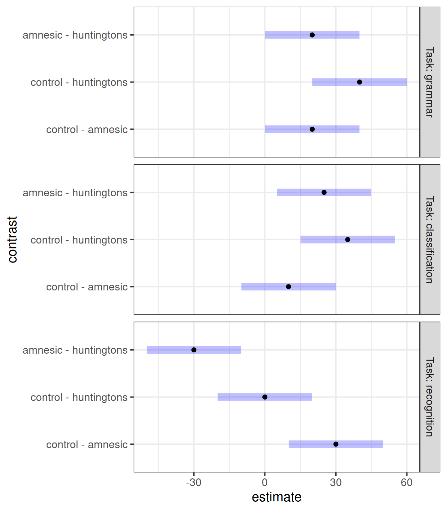

Exploratory analysis
Question 1
Load the tidyverse library and read the cognitive experiment data into R.
Convert categorical variables into factors, and assign more informative labels to the factor levels according to the data description provided above.
Relevel the Diagnosis factor to have “Control” as the reference group. (Hint: Use the fct_relevel function).
Rename the response variable from Y to Score.
Solution
Load the tidyverse library and read the data into R:
library(tidyverse)
cog <- read_csv('https://uoepsy.github.io/data/cognitive_experiment.csv')
head(cog)
## # A tibble: 6 x 3
## Diagnosis Task Y
## <dbl> <dbl> <dbl>
## 1 1 1 44
## 2 1 1 63
## 3 1 1 76
## 4 1 1 72
## 5 1 1 45
## 6 1 2 72
We will now convert Diagnosis and Task into factors, making the labels of each factor level more meaningful.
According to the data description, the encoding of the factor Diagnosis is: 1 = amnesic patients, 2 = Huntingtons patients, and 3 are control patients.
cog$Diagnosis <- factor(cog$Diagnosis,
labels = c("amnesic", "huntingtons", "control"),
ordered = FALSE)
The encoding for the factor Task is: 1 = grammar task, 2 = classification task, and 3 = recognition task.
cog$Task <- factor(cog$Task,
labels = c("grammar", "classification", "recognition"),
ordered = FALSE)
Relevel the Diagnosis factor so that the reference group is “Control”:
cog$Diagnosis <- fct_relevel(cog$Diagnosis, "control")
Rename the response:
cog <- cog %>%
rename(Score = Y)
Look at the data:
head(cog)
## # A tibble: 6 x 3
## Diagnosis Task Score
## <fct> <fct> <dbl>
## 1 amnesic grammar 44
## 2 amnesic grammar 63
## 3 amnesic grammar 76
## 4 amnesic grammar 72
## 5 amnesic grammar 45
## 6 amnesic classification 72
Question 2
Create some exploratory plots showing
- the joint distribution of diagnosis and task;
- how the patient scores vary across the tasks;
- how the patient scores vary across the diagnoses;
- how the patient scores vary between the different diagnostic groups and tasks. This is called an interaction plot.
Solution
Let’s study the joint distribution of the two factors using a segmented bar chart:
ggplot(cog, aes(x = Diagnosis, fill = Task)) +
geom_bar()

There were 15 control patients, 15 amnesic patients, and 15 Huntingtons patients. For each diagnosis, five patients were randomly assigned to take either a grammar, a classification, or a recognition task.
The following plot shows how the patient scores vary across the tasks:
ggplot(cog, aes(x = Task, y = Score, color = Task)) +
geom_boxplot()
The next plot shows how the patient scores vary across the diagnosis:
ggplot(cog, aes(x = Diagnosis, y = Score, color = Diagnosis)) +
geom_boxplot()
The following interaction plot displays the average score, plus or minus two standard errors of the mean, for the different combinations of diagnosis and task.
The mean plus or minus one standard error covers approximately 95% of the values, see this Wikipedia article.
cog_stats <- cog %>%
group_by(Diagnosis, Task) %>%
summarise(
Avg_Score = mean(Score),
SE = sd(Score) / sqrt(n())
)
cog_stats
## # A tibble: 9 x 4
## # Groups: Diagnosis [3]
## Diagnosis Task Avg_Score SE
## <fct> <fct> <dbl> <dbl>
## 1 control grammar 80 5.22
## 2 control classification 80 5.81
## 3 control recognition 95 5.81
## 4 amnesic grammar 60 6.67
## 5 amnesic classification 70 4.55
## 6 amnesic recognition 65 5.44
## 7 huntingtons grammar 40 5.92
## 8 huntingtons classification 45 4.86
## 9 huntingtons recognition 95 5.98
ggplot(data = cog_stats, aes(x = Task, y = Avg_Score, color = Diagnosis)) +
geom_point(size = 3) +
geom_linerange(aes(ymin = Avg_Score - 2 * SE, ymax = Avg_Score + 2 * SE)) +
geom_line(aes(x = as.numeric(Task)))

The interaction plot suggests the presence of a significant interaction between diagnosis and task in the data.
Control patients consistently perform best across all tasks. They don’t seem to differ substantially in their scores between grammar and classification tasks, but they clearly perform better in the recognition task than the grammar and classification ones.
Amnesic patients appear to perform better than Huntingtons patients in grammar an classification tasks (reflecting intrinsic memory processes) and perform worse than Huntingtons patients in the recognition task (reflecting extrinsic memory processes).
Model fitting
The study involves two factors with three levels each. For each combination of factor levels we have 5 observations. The five observations are assumed to come from a population having a specific mean. The population means corresponding to each combination of factor levels can be schematically written as:
\[
\begin{matrix}
& & & \textbf{Task} & \\
& & (j=1)\text{ grammar} & (j=2)\text{ classification} & (j=3)\text{ recognition} \\
& (i=1)\text{ control} & \mu_{1,1} & \mu_{1,2} & \mu_{1,3} \\
\textbf{Diagnosis} & (i=2)\text{ amnesic} & \mu_{2,1} & \mu_{2,2} & \mu_{2,3} \\
& (i=3)\text{ huntingtons} & \mu_{3,1} & \mu_{3,2} & \mu_{3,3}
\end{matrix}
\]
Additive model
The additive two-way ANOVA model has the form
\[
Score_{i,j,k} = Intercept + DiagnosisEffect_i + TaskEffect_j + Error_{i,j,k} \qquad \begin{cases}
i = 1, 2, 3 \\
j = 1, 2, 3 \\
k = 1, ..., 5
\end{cases}
\]
where:
- \(i = 1, 2, 3\) counts the levels of the first factor (Diagnosis);
- \(j = 1, 2, 3\) counts the levels of the second factor (Task);
- \(k = 1, ..., 5\) counts the observations within each combination of factor levels;
- \(Score_{i,j,k}\) is the \(k\)th score measured at level \(i\) of Diagnosis and level \(j\) of Task;
- \(Intercept\) is the model intercept;
- \(DiagnosisEffect_i\) represents the effect of level \(i\) of Diagnosis;
- \(TaskEffect_j\) represents the effect of level \(j\) of Task.
As last week, the interpretation of \(Intercept\) will change depending on the side-constraint used.
This week we will be using the reference group constraint (contr.treatment), which is what R uses by default.
Reference group constraint
Under the reference group constraint, the intercept represents the mean response at the first level of each factor, that is when Diagnosis is “control” and Task = “grammar.”
The terms \(DiagnosisEffect_i\) and \(TaskEffect_j\) correspond, respectively, to the effect of level \(i\) of the first factor and level \(j\) of the second factor.
The reference group constraint in the two-factor case is a simple generalisation of the constraint we saw last week:
\[
\begin{aligned}
Intercept &= \mu_{1,1} \\
DiagnosisEffect_1 &= 0 \\
TaskEffect_1 &= 0
\end{aligned}
\]
The cell means are obtained as:
\[
{
\scriptsize
\begin{matrix}
& & \textbf{Task} & \\
\textbf{Diagnosis} & (j=1)\text{ grammar} & (j=2)\text{ classification} & (j=3)\text{ recognition} \\
(i=1)\text{ control} & Intercept & Intecept + TaskEffect_2 & Intercept + TaskEffect_3 \\
(i=2)\text{ amnesic} & Intercept + DiagnosisEffect_2 & Intercept + DiagnosisEffect_2 + TaskEffect_2 & Intercept + DiagnosisEffect_2 + TaskEffect_3 \\
(i=3)\text{ huntingtons} & Intercept + DiagnosisEffect_3 & Intercept + DiagnosisEffect_3 + TaskEffect_2 & Intercept + DiagnosisEffect_3 + TaskEffect_3
\end{matrix}
}
\]
Sum to zero constraint
If, instead, we use the sum to zero constraint, we would have that
\[
\begin{aligned}
Intercept &= \frac{\mu_{1,1} + \mu_{1,2} + \cdots + \mu_{3,3}}{9} = \text{global mean} \\
DiagnosisEffect_3 &= -(DiagnosisEffect_1 + DiagnosisEffect_2) \\
TaskEffect_3 &= -(TaskEffect_1 + TaskEffect_2)
\end{aligned}
\]
meaning that the intercept would now represent the overall or global mean, and the last effect for each factor would not be shown in the R output as it can be found using the side-constraint as minus the sum of the remaining effects for that factor.
Cognitive experiment continued
Let’s go back to the cognitive experiment data…
From the exploratory analysis performed in question 2, it seems that both task and diagnosis factors might help predict a patient score.
Question 3
Fit a linear model which makes use of the two factors Diagnosis and Task to predict the patients’ Score. Call the fitted model mdl_add.
Comment on the F-test for model utility returned by summary(mdl_add), as well as the t-test for the significance of the model coefficients.
Furthermore, look at the anova(mdl_add) and comment on whether Diagnosis impacts scores on the test and whether each Task affects the score.
Solution
mdl_add <- lm(Score ~ 1 + Diagnosis + Task, data = cog)
Summary output and model coefficients
Let’s now inspect the output of the summary function:
summary(mdl_add)
##
## Call:
## lm(formula = Score ~ 1 + Diagnosis + Task, data = cog)
##
## Residuals:
## Min 1Q Median 3Q Max
## -29 -12 1 10 33
##
## Coefficients:
## Estimate Std. Error t value Pr(>|t|)
## (Intercept) 75.000 5.447 13.770 < 2e-16 ***
## Diagnosisamnesic -20.000 5.967 -3.352 0.001762 **
## Diagnosishuntingtons -25.000 5.967 -4.190 0.000149 ***
## Taskclassification 5.000 5.967 0.838 0.407009
## Taskrecognition 25.000 5.967 4.190 0.000149 ***
## ---
## Signif. codes: 0 '***' 0.001 '**' 0.01 '*' 0.05 '.' 0.1 ' ' 1
##
## Residual standard error: 16.34 on 40 degrees of freedom
## Multiple R-squared: 0.4958, Adjusted R-squared: 0.4453
## F-statistic: 9.831 on 4 and 40 DF, p-value: 1.233e-05
The null hypothesis for the F-test of model utility is that:
\[
H_0 : \begin{cases}
DiagnosisEffect_2 = DiagnosisEffect_3 = 0 \\
TaskEffect_2 = TaskEffect_3 = 0
\end{cases}
\]
The result of the F-test of model utility tells us that both diagnosis and task are useful predictors of patient scores.
At the 5% significance level, we performed an F-test for model utility, \(F(4,40) = 9.831, p <.001\).
If diagnosis and task were not useful in predicting patient scores, we would obtain sample results as extreme or more extreme than the ones observed only one out of 10,000 times. Hence, the data provide very strong evidence that both predictors are useful.
Looking at the t-test for the significance of the model coefficients, it appears that the only non-significant coefficient is the effect of the classification task.
This means that the population mean score for the classification task is the same as the population mean score for the grammar task (reference group).
This is in agreement with Figure 1, where you can see that the main effect of the classification task is not significantly different from that of the grammar task.
ANOVA table
The output of anova is:
anova(mdl_add)
## Analysis of Variance Table
##
## Response: Score
## Df Sum Sq Mean Sq F value Pr(>F)
## Diagnosis 2 5250 2625 9.8315 0.0003366 ***
## Task 2 5250 2625 9.8315 0.0003366 ***
## Residuals 40 10680 267
## ---
## Signif. codes: 0 '***' 0.001 '**' 0.01 '*' 0.05 '.' 0.1 ' ' 1
The ANOVA analysis splits up the total variation into three sources: the variation due to the different diagnosis, the variation due to different task, and the residual variation.
Both F-ratios are large. Looking back at the boxplots in Figure 1 and 2, we shouldn’t be surprised.
It was clear that there were differences in scores among the different diagnoses (control, amnesic, and Huntingtons patients) even without accounting for the fact that each level contained three different tasks.
Similarly, there were clear differences in cognitive scores across the three tasks (grammar, classification, and recognition).
The two null hypotheses to test are
No effect due to the Diagnosis factor:
\[
H_0 : DiagnosisEffect_1 = DiagnosisEffect_2 = DiagnosisEffect_3 = 0
\]
No effect due to the Task factor:
\[
H_0 : TaskEffect_1 = TaskEffect_2 = TaskEffect_3 = 0
\]
The p-value for Diagnosis (<.001) is very small, indicating that (not surprisingly) there are differences in cognitive scores between the four diagnoses.
The small p-value for Task (<.001) indicates that, after accounting for the differences due to the diagnosis, we can detect (at a 5% level) an effect on the cognitive scores due to the assigned task.
We could say:
The F-ratio for Diagnosis is 9.83. The probability of an F-ratio that big occurring by chance is very small (<.001). So, we can reject the null hypothesis that the effects of control, amnesic and Huntingtons are all zero and conclude that there is an effect on the cognitive scores due to the patient’s diagnosis.
The F-ratio for Task of 9.83 with a p-value <.001 leads us to reject the null hypothesis about task effects as well. We conclude that the tasks taken by the patients impact the cognitive scores.
Assumption checks
Of course, there will be assumptions and conditions to check. The good news is that most are the same as for linear regression.
The only difference is that linearity is now replaced by checking whether the errors in each group have mean zero.
par(mfrow = c(2,2))
plot(mdl_add)

The residuals for each group do not seem to be randomly scattered around zero. Some groups have a higher mean than others. This indicates that the model has not captured all the systematic trend in the data, and some is leftover in the residuals. The model needs to be changed to meet the zero mean errors assumption.
The residuals seem to come from a normal distribution, and the spread of the residuals in each group seems roughly constant.
Because the zero-mean condition is violated, we will soon change the model to see if we can capture the remaining trend in the data and leave residuals with zero mean.
To do so, in light of the strong interaction present in the data, we will add an interaction term to our model.
Question 4
Use the additive model fitted above to predict the average score for each combination of the factor levels. (Hint: use the predict() function)
Create a plot showing how the predicted averages vary by diagnosis and task.
Does this match to the last plot created in question 2?
Solution
Create the combination of factor levels for which we want a prediction:
treatments <- expand_grid(
Diagnosis = fct_relevel(c("control", "amnesic", "huntingtons"), "control"),
Task = fct_relevel(c("grammar", "classification", "recognition"), "grammar")
)
head(treatments)
## # A tibble: 6 x 2
## Diagnosis Task
## <fct> <fct>
## 1 control grammar
## 2 control classification
## 3 control recognition
## 4 amnesic grammar
## 5 amnesic classification
## 6 amnesic recognition
Provide the levels for which we want a prediction to the predict() function:
pred_add <- treatments %>%
mutate(Pred_Score = predict(mdl_add, newdata = treatments))
head(pred_add)
## # A tibble: 6 x 3
## Diagnosis Task Pred_Score
## <fct> <fct> <dbl>
## 1 control grammar 75
## 2 control classification 80
## 3 control recognition 100
## 4 amnesic grammar 55
## 5 amnesic classification 60
## 6 amnesic recognition 80
Create an interaction plot:
ggplot(pred_add, aes(x = Task, y = Pred_Score, color = Diagnosis)) +
geom_point() +
geom_line(aes(x = as.numeric(Task)))

It seems like the additive model doesn’t capture well the trend in the data. According to the additive model, the effect of Task remains constant across the different types of patients (Diagnosis).
However, the interaction plot created during our exploratory analysis (question 2) highlighted that the task effect is not constant across all groups of patients: the two factors interact.
Interaction model
An interaction model also allows for the interaction of the two factors. That is, the effect of level \(i\) of one factor can be different depending on level \(j\) of the second factor. For example, the effect of amnesia (\(i=2\)) might increase the response in grammar tasks (\(j=1\)), while it might decrease the response in recognition tasks (\(j=3\)).
The two-way ANOVA model with interaction is:
\[
Score_{i,j,k} = Intercept + DiagnosisEffect_i + TaskEffect_j + InteractionEffect_{i,j} + Error_{i,j,k}
\]
where the constraints on the interaction are such that whenever \(i=1\) OR \(j=1\), the coefficient is 0:
\[
\begin{aligned}
InteractionEffect_{1,1} &= 0 \qquad InteractionEffect_{1,2} = 0 \qquad \qquad InteractionEffect_{1,3} = 0 \\
InteractionEffect_{2,1} &= 0 \\
InteractionEffect_{3,1} &= 0
\end{aligned}
\]
Question 5
Update the previously fitted additive model to also include an interaction term for Diagnosis and Task. Call the fitted model mdl_int.
Comment on the model output.
Solution
Fit the interaction model:
mdl_int <- lm(Score ~ 1 + Diagnosis + Task + Diagnosis:Task, data = cog)
Alternatively, you could have used the following shorter version:
mdl_int <- lm(Score ~ 1 + Diagnosis * Task, data = cog)
Let’s look at the summary:
summary(mdl_int)
##
## Call:
## lm(formula = Score ~ 1 + Diagnosis + Task + Diagnosis:Task, data = cog)
##
## Residuals:
## Min 1Q Median 3Q Max
## -16 -12 2 11 18
##
## Coefficients:
## Estimate Std. Error t value Pr(>|t|)
## (Intercept) 8.000e+01 5.617e+00 14.241 2.30e-16
## Diagnosisamnesic -2.000e+01 7.944e+00 -2.518 0.01641
## Diagnosishuntingtons -4.000e+01 7.944e+00 -5.035 1.35e-05
## Taskclassification 1.461e-14 7.944e+00 0.000 1.00000
## Taskrecognition 1.500e+01 7.944e+00 1.888 0.06708
## Diagnosisamnesic:Taskclassification 1.000e+01 1.123e+01 0.890 0.37933
## Diagnosishuntingtons:Taskclassification 5.000e+00 1.123e+01 0.445 0.65895
## Diagnosisamnesic:Taskrecognition -1.000e+01 1.123e+01 -0.890 0.37933
## Diagnosishuntingtons:Taskrecognition 4.000e+01 1.123e+01 3.560 0.00106
##
## (Intercept) ***
## Diagnosisamnesic *
## Diagnosishuntingtons ***
## Taskclassification
## Taskrecognition .
## Diagnosisamnesic:Taskclassification
## Diagnosishuntingtons:Taskclassification
## Diagnosisamnesic:Taskrecognition
## Diagnosishuntingtons:Taskrecognition **
## ---
## Signif. codes: 0 '***' 0.001 '**' 0.01 '*' 0.05 '.' 0.1 ' ' 1
##
## Residual standard error: 12.56 on 36 degrees of freedom
## Multiple R-squared: 0.7318, Adjusted R-squared: 0.6722
## F-statistic: 12.28 on 8 and 36 DF, p-value: 2.844e-08
The F-test for model utility is again significant at the 5% level: \(F(8,36) = 12.28, p < .001\). An F-statistic this large or larger occurring by chance only is very small, hence there is strong evidence that the model coefficients are not all zero in the population.
In the presence of a significant interaction we do not interpret the main effects as their interpretation changes with the level of the other factor.
anova(mdl_int)
## Analysis of Variance Table
##
## Response: Score
## Df Sum Sq Mean Sq F value Pr(>F)
## Diagnosis 2 5250 2625.00 16.6373 7.64e-06 ***
## Task 2 5250 2625.00 16.6373 7.64e-06 ***
## Diagnosis:Task 4 5000 1250.00 7.9225 0.0001092 ***
## Residuals 36 5680 157.78
## ---
## Signif. codes: 0 '***' 0.001 '**' 0.01 '*' 0.05 '.' 0.1 ' ' 1
The interaction between diagnosis and task is significant. At the 5% level, the probability of obtaining an F-statistic as large as 7.92 or larger, if there was no interaction effect, is <.001. This provides very strong evidence against the null hypothesis that effect of task is constant across the different diagnoses.
Question 6
Perform a model comparison between the additive model and the interaction model using the anova() function.
Interpret the result of the model comparison.
Which model will you use to answer the research questions of interest?
Solution
We compared two models:
\[
\begin{aligned}
M1 &: Score_{i,j,k} = Intercept + DiagnosisEffect_i + TaskEffect_j + Error_{i,j,k} \\
M2 &: Score_{i,j,k} = Intercept + DiagnosisEffect_i + TaskEffect_j + InteractionEffect_{i,j} + Error_{i,j,k}
\end{aligned}
\]
The relevant function is anova() with the two models as inputs:
anova(mdl_add, mdl_int)
## Analysis of Variance Table
##
## Model 1: Score ~ 1 + Diagnosis + Task
## Model 2: Score ~ 1 + Diagnosis + Task + Diagnosis:Task
## Res.Df RSS Df Sum of Sq F Pr(>F)
## 1 40 10680
## 2 36 5680 4 5000 7.9225 0.0001092 ***
## ---
## Signif. codes: 0 '***' 0.001 '**' 0.01 '*' 0.05 '.' 0.1 ' ' 1
We performed an F-test to compare two nested models: an additive two-factor ANOVA against a two-factor model with interaction. The test results are \(F(4, 36) = 7.9225, p < .001\).
At the 5% significance level, the probability of obtaining an F-statistic as large as 7.92 or larger is <.001.
Hence, the comparison of nested models provides strong evidence against the additive effects model, suggesting that we should use the interaction model (M2) as each factor has a different effect on the response depending the level of the other factor.
Question 7
Generate again a plot showing the predicted mean scores for each combination of levels of the diagnosis and task factors.
Do the predicted values better match the interaction plot created in question 2?
Solution
pred_int <- treatments %>%
mutate(Pred_Score = predict(mdl_int, newdata = treatments))
head(pred_int)
## # A tibble: 6 x 3
## Diagnosis Task Pred_Score
## <fct> <fct> <dbl>
## 1 control grammar 80.0
## 2 control classification 80
## 3 control recognition 95
## 4 amnesic grammar 60
## 5 amnesic classification 70
## 6 amnesic recognition 65
ggplot(pred_int, aes(x = Task, y = Pred_Score, color = Diagnosis)) +
geom_point() +
geom_line(aes(x = as.numeric(Task)))

The plot does a better job in capturing the effect of the two factors and how the combination of two levels of the factors can either enhance or inhibit a patient’s performance on a task.
We can equivalently use the emmeans package to study interactions. In our original interaction plot, we plotted the mean plus or minus two standard errors.
library(emmeans)
emmip(mdl_int, Diagnosis ~ Task, CIs = TRUE)

Contrast analysis
We will begin by looking at each factor separately.
In terms of the diagnostic groups, recall that we want to compare the amnesiacs to the Huntington individuals.
This corresponds to a contrast with coefficients of 0, 1, and −1, for control, amnesic, and Huntingtons, respectively.
Similarly, in terms of the tasks, we want to compare the average of the two implicit memory tasks with the explicit memory task.
This corresponds to a contrast with coefficients of 0.5, 0.5, and −1 for the three tasks.
When we are in presence of a significant interaction, the coefficients for a contrast between the means are found by multiplying each row coefficient with all column coefficients as shown below:

This can be done in R using:
diag_coef <- c('control' = 0, 'amnesic' = 1, 'huntingtons' = -1)
task_coef <- c('grammar' = 0.5, 'classification' = 0.5, 'recognition' = -1)
contr_coef <- outer(diag_coef, task_coef) # or: diag_coef %o% task_coef
contr_coef
## grammar classification recognition
## control 0.0 0.0 0
## amnesic 0.5 0.5 -1
## huntingtons -0.5 -0.5 1
The above coefficients correspond to testing the null hypothesis
\[
H_0 : \frac{\mu_{2,1} + \mu_{2,2}}{2} - \mu_{2,3} - \left( \frac{\mu_{3,1} + \mu_{3,2}}{2} - \mu_{3,3} \right) = 0
\]
or, equivalently,
\[
H_0 : \frac{\mu_{2,1} + \mu_{2,2}}{2} - \mu_{2,3} = \frac{\mu_{3,1} + \mu_{3,2}}{2} - \mu_{3,3}
\]
which says that, in the population, the difference between the mean implicit memory and the explicit memory score is the same for amnesic patients and Huntingtons individuals. Note that the scores for the grammar and classification tasks have been averaged to obtain a single measure of “implicit memory” score.
Now that we have the coefficients, let’s call the emmeans function:
emm <- emmeans(mdl_int, ~ Diagnosis*Task)
emm
## Diagnosis Task emmean SE df lower.CL upper.CL
## control grammar 80 5.62 36 68.6 91.4
## amnesic grammar 60 5.62 36 48.6 71.4
## huntingtons grammar 40 5.62 36 28.6 51.4
## control classification 80 5.62 36 68.6 91.4
## amnesic classification 70 5.62 36 58.6 81.4
## huntingtons classification 45 5.62 36 33.6 56.4
## control recognition 95 5.62 36 83.6 106.4
## amnesic recognition 65 5.62 36 53.6 76.4
## huntingtons recognition 95 5.62 36 83.6 106.4
##
## Confidence level used: 0.95
Next, insert the coefficients following the order specified by the rows of emm above. That is, the first one should be for control grammar, the second for amnesic grammar, and so on…
We also give a name to this contrast, such as ‘Research Hyp.’
comp_res <- contrast(emm,
method = list('Research Hyp' = c(0, 0.5, -0.5, 0, 0.5, -0.5, 0, -1, 1)))
comp_res
## contrast estimate SE df t.ratio p.value
## Research Hyp 52.5 9.73 36 5.396 <.0001
confint(comp_res)
## contrast estimate SE df lower.CL upper.CL
## Research Hyp 52.5 9.73 36 32.8 72.2
##
## Confidence level used: 0.95
or:
summary(comp_res, infer = TRUE)
## contrast estimate SE df lower.CL upper.CL t.ratio p.value
## Research Hyp 52.5 9.73 36 32.8 72.2 5.396 <.0001
##
## Confidence level used: 0.95
Question 9
Interpret the results of the contrast analysis.
Solution
The contrast analysis yields a t-value of 5.4 and a corresponding p value less than .001. Thus, there is strong evidence that the contrast is not zero in the population. In other words, amnesiacs and Huntingtons differ in the difference between implicit and explicit recognition memory tasks.
Examining the cell means or, even better, the interaction plot showing the cell means (shown again below) shows that amnesiacs perform relatively better on implicit memory tasks, whereas Huntington individuals perform relatively better on explicit memory tasks, just as expected from our theory.
It may be useful to supplement this hypothesis test with some indication of effect size. The recommendation is to report a confidence interval and interpret it in the context of the study, playing attention to the sign of the interval.
The contrast analysis shows that the 95% confidence interval for our contrast stretches from 32.77 to 72.23. This interval does not contain zero. Thus, we can be 95% confident that the task difference is not the same for amnesiacs as for Huntingtons, which is why we can reject the null hypothesis that the difference in differences is zero.
Question 10
The following code compares the means of the different diagnosis groups for each task.
Furthermore, it adjusts for multiple comparisons using the Bonferroni method. This makes sure that the experimentwise error rate is 5%. If we do not control for multiple comparisons, the more t-tests we do, the higher the chance of wrongly rejecting the null, and across the family of t-tests performed that chance will be much higher than 5%.
emm_task <- emmeans(mdl_int, ~ Diagnosis | Task)
emm_task
## Task = grammar:
## Diagnosis emmean SE df lower.CL upper.CL
## control 80 5.62 36 68.6 91.4
## amnesic 60 5.62 36 48.6 71.4
## huntingtons 40 5.62 36 28.6 51.4
##
## Task = classification:
## Diagnosis emmean SE df lower.CL upper.CL
## control 80 5.62 36 68.6 91.4
## amnesic 70 5.62 36 58.6 81.4
## huntingtons 45 5.62 36 33.6 56.4
##
## Task = recognition:
## Diagnosis emmean SE df lower.CL upper.CL
## control 95 5.62 36 83.6 106.4
## amnesic 65 5.62 36 53.6 76.4
## huntingtons 95 5.62 36 83.6 106.4
##
## Confidence level used: 0.95
contr_task <- contrast(emm_task, method = 'pairwise',
adjust = "bonferroni")
contr_task
## Task = grammar:
## contrast estimate SE df t.ratio p.value
## control - amnesic 20 7.94 36 2.518 0.0492
## control - huntingtons 40 7.94 36 5.035 <.0001
## amnesic - huntingtons 20 7.94 36 2.518 0.0492
##
## Task = classification:
## contrast estimate SE df t.ratio p.value
## control - amnesic 10 7.94 36 1.259 0.6486
## control - huntingtons 35 7.94 36 4.406 0.0003
## amnesic - huntingtons 25 7.94 36 3.147 0.0099
##
## Task = recognition:
## contrast estimate SE df t.ratio p.value
## control - amnesic 30 7.94 36 3.776 0.0017
## control - huntingtons 0 7.94 36 0.000 1.0000
## amnesic - huntingtons -30 7.94 36 -3.776 0.0017
##
## P value adjustment: bonferroni method for 3 tests
plot(contr_task)

Discuss what the plot tells us.
Solution
The plot shows the result of a pairwise comparisons of the mean score across the different diagnosis groups for a given task. The black dot displays the estimated mean of the combination of factor levels, while the blue band represents the 95% confidence interval.
We can also get the confidence intervals numerically using the same functions shown in the previous question:
confint(contr_task)
## Task = grammar:
## contrast estimate SE df lower.CL upper.CL
## control - amnesic 20 7.94 36 0.0517 39.9
## control - huntingtons 40 7.94 36 20.0517 59.9
## amnesic - huntingtons 20 7.94 36 0.0517 39.9
##
## Task = classification:
## contrast estimate SE df lower.CL upper.CL
## control - amnesic 10 7.94 36 -9.9483 29.9
## control - huntingtons 35 7.94 36 15.0517 54.9
## amnesic - huntingtons 25 7.94 36 5.0517 44.9
##
## Task = recognition:
## contrast estimate SE df lower.CL upper.CL
## control - amnesic 30 7.94 36 10.0517 49.9
## control - huntingtons 0 7.94 36 -19.9483 19.9
## amnesic - huntingtons -30 7.94 36 -49.9483 -10.1
##
## Confidence level used: 0.95
## Conf-level adjustment: bonferroni method for 3 estimates
or:
summary(contr_task, infer = TRUE)
Top plot: grammar task
The top plot shows that the amnesic patients are significantly different from the Huntingtons individuals and perform better on the grammar score (related to implicit memory).
The control individuals perform significantly better than both the Huntingtons and the amnesic individuals on the grammar task.
Middle plot: classification task
In the middle plot we can see that the amnesic individuals score significantly higher than the Huntingtons patients in the classification task (also related to implicit memory).
Control individuals score significantly higher than the Huntingtons patients.
On the contrary, control individuals do not perform significantly different from amnesic patients in the classification task.
Bottom plot: recognition task
Amnesic patients score significantly lower than Huntingtons individuals in the recognition task (related to explicit memory).
Control individuals do nto perform significantly different from the Huntingtons.
Finally, control patients perform significantly better than amnesic patients in the recognition task.
Let’s now interpret the quantities of interest for our study.
We are 95% confident that amnesic patients score between .05 and 40 higher, on average, than Huntingtons individuals in the grammar task, which is related to implicit memory.
In the classification task, also related to implicit memory, we are 95% confident that amnesic patients score between 5 and 45 more, on average, than Huntingtons individuals.
Finally, we are 95% confident that amnesic patients will score between 50 and 10 less, on average, than Huntingtons patients.
Testing all combinations (pairwise comparisons).
Above, we have looked at the pairwise comparisons of the mean scores across the different diagnosis for a given task.
To test all pairwise combinations of means across all diagnoses and tasks, we use the following code:
emm <- emmeans(mdl_int, ~ Diagnosis*Task)
contrast(emm, method = 'pairwise', adjust = "bonferroni")
## contrast estimate SE df t.ratio
## control grammar - amnesic grammar 20 7.94 36 2.518
## control grammar - huntingtons grammar 40 7.94 36 5.035
## control grammar - control classification 0 7.94 36 0.000
## control grammar - amnesic classification 10 7.94 36 1.259
## control grammar - huntingtons classification 35 7.94 36 4.406
## control grammar - control recognition -15 7.94 36 -1.888
## control grammar - amnesic recognition 15 7.94 36 1.888
## control grammar - huntingtons recognition -15 7.94 36 -1.888
## amnesic grammar - huntingtons grammar 20 7.94 36 2.518
## amnesic grammar - control classification -20 7.94 36 -2.518
## amnesic grammar - amnesic classification -10 7.94 36 -1.259
## amnesic grammar - huntingtons classification 15 7.94 36 1.888
## amnesic grammar - control recognition -35 7.94 36 -4.406
## amnesic grammar - amnesic recognition -5 7.94 36 -0.629
## amnesic grammar - huntingtons recognition -35 7.94 36 -4.406
## huntingtons grammar - control classification -40 7.94 36 -5.035
## huntingtons grammar - amnesic classification -30 7.94 36 -3.776
## huntingtons grammar - huntingtons classification -5 7.94 36 -0.629
## huntingtons grammar - control recognition -55 7.94 36 -6.923
## huntingtons grammar - amnesic recognition -25 7.94 36 -3.147
## huntingtons grammar - huntingtons recognition -55 7.94 36 -6.923
## control classification - amnesic classification 10 7.94 36 1.259
## control classification - huntingtons classification 35 7.94 36 4.406
## control classification - control recognition -15 7.94 36 -1.888
## control classification - amnesic recognition 15 7.94 36 1.888
## control classification - huntingtons recognition -15 7.94 36 -1.888
## amnesic classification - huntingtons classification 25 7.94 36 3.147
## amnesic classification - control recognition -25 7.94 36 -3.147
## amnesic classification - amnesic recognition 5 7.94 36 0.629
## amnesic classification - huntingtons recognition -25 7.94 36 -3.147
## huntingtons classification - control recognition -50 7.94 36 -6.294
## huntingtons classification - amnesic recognition -20 7.94 36 -2.518
## huntingtons classification - huntingtons recognition -50 7.94 36 -6.294
## control recognition - amnesic recognition 30 7.94 36 3.776
## control recognition - huntingtons recognition 0 7.94 36 0.000
## amnesic recognition - huntingtons recognition -30 7.94 36 -3.776
## p.value
## 0.5907
## 0.0005
## 1.0000
## 1.0000
## 0.0033
## 1.0000
## 1.0000
## 1.0000
## 0.5907
## 0.5907
## 1.0000
## 1.0000
## 0.0033
## 1.0000
## 0.0033
## 0.0005
## 0.0207
## 1.0000
## <.0001
## 0.1190
## <.0001
## 1.0000
## 0.0033
## 1.0000
## 1.0000
## 1.0000
## 0.1190
## 0.1190
## 1.0000
## 0.1190
## <.0001
## 0.5907
## <.0001
## 0.0207
## 1.0000
## 0.0207
##
## P value adjustment: bonferroni method for 36 tests